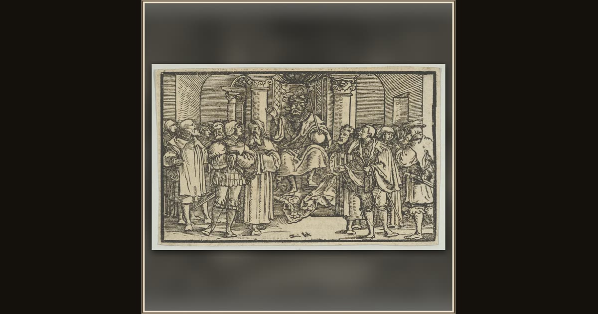

Representatives of Athens and Corinth at the Court of Archidamas, King of Sparta, from the History of the Peloponnesian War by Thucydides
Hans Schäufelein · 1533 · met
A woodcut shows representatives of Athens and Corinth before the seated Spartan king Archidamus; at this point in the account, he comes forward to address Sparta's debate over war (1.79.2). Explore its place in Thucydides's History of the Peloponnesian War, Bo